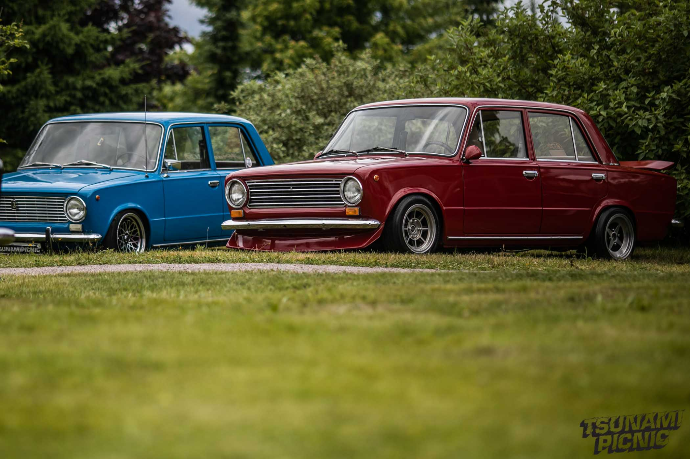
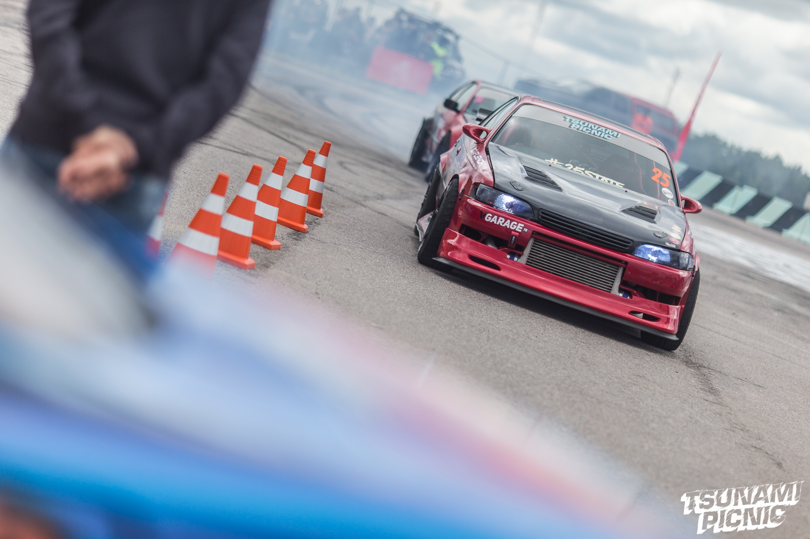
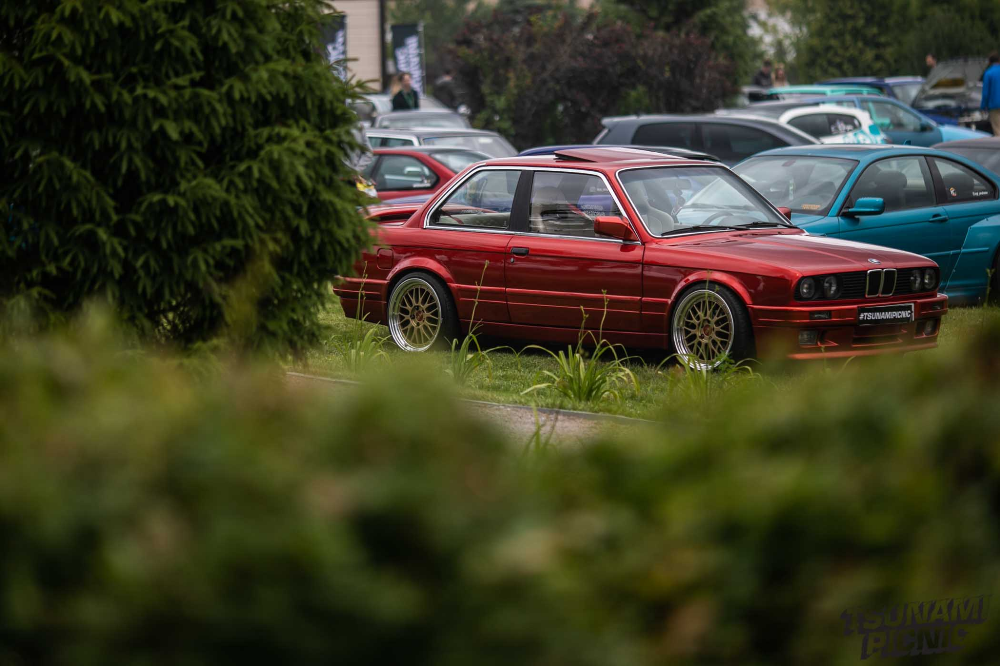
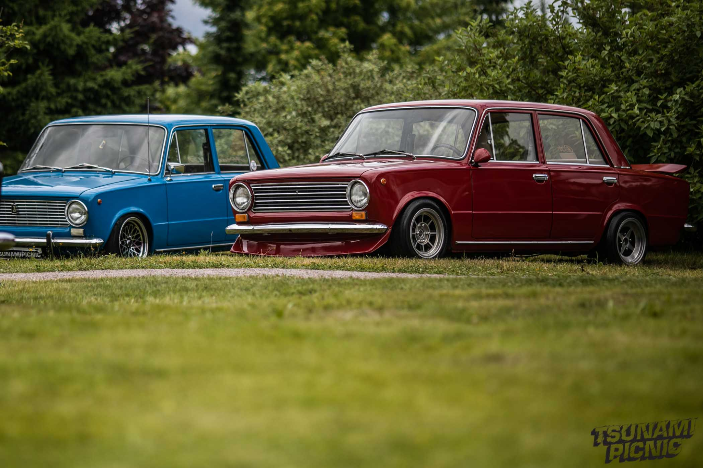
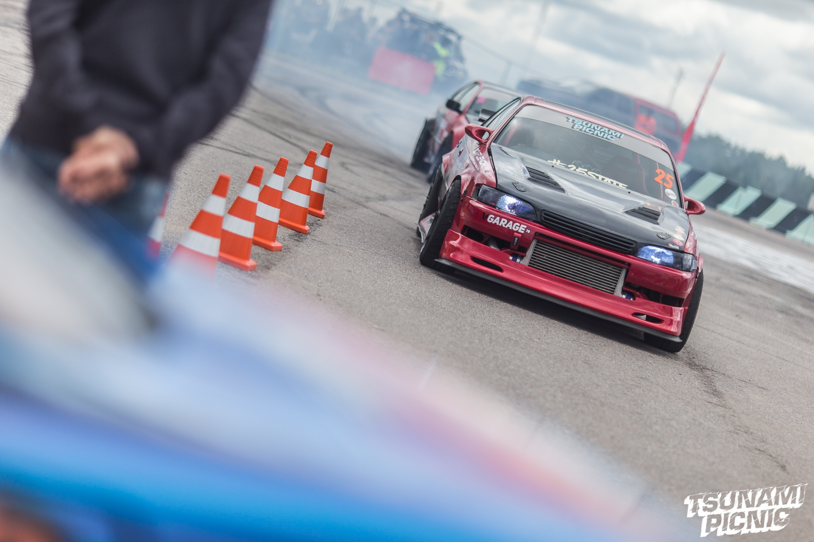
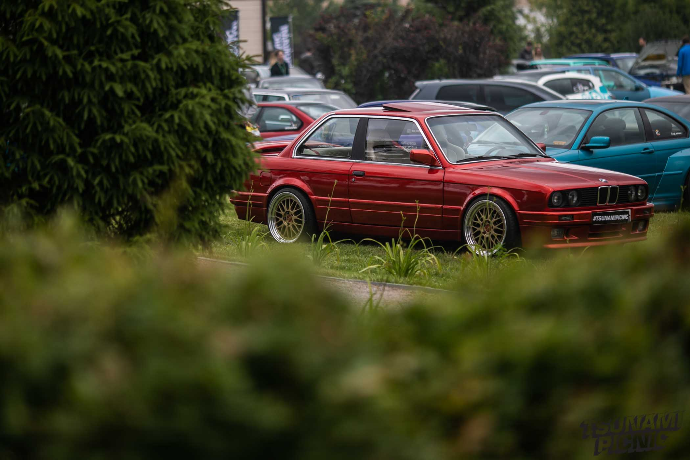

JDM - японский стиль заключается создание авто с исключительными характеристиками это быстрые и мощные часто хетчбеки которые на гоночной трассе превосходят автомобили более высоких классов
RAT LOOK - автомобили которые внешне оставляют в том состоянии до какого докатились за долгие годы реставрируется все кроме внешнего вида, кузова можно реставрировать там где этого не будет видно
LOWRIDER - американские автомобили (50-60 годов) с пневматической или гидравлической подвеской главное чтоб авто буквально лежало на земле также дорабатывают салон двигатель диски.
DRIFT - авто с задним приводном мощные облегченные автомобили с блокирующим дифференциалом типичным купленным большим обвесом, спойлерами и наклейками спонсоров по бокам
WRC - авто делаются похожими на те которые ездят в ралли или каких либо других гонках на машинах часто без спонсорских наклеек популярен среди владельцев субару импреза и митсубиши эволюшен
BOSOZOKU - включает в себя 5 направлений: Shakotan, Yanki Style, VIP Style, Kyusha Style, Crachan. В общих чертах отличается широкими дисками, отрицательным развалом колес, широким обвесом, минимальным клиренсом.
 




